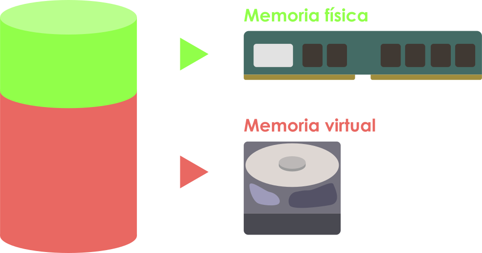
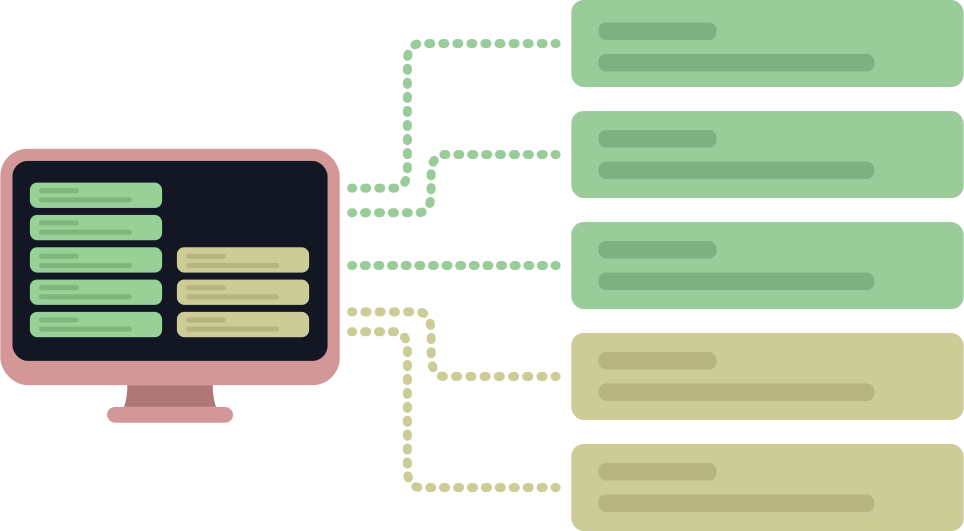
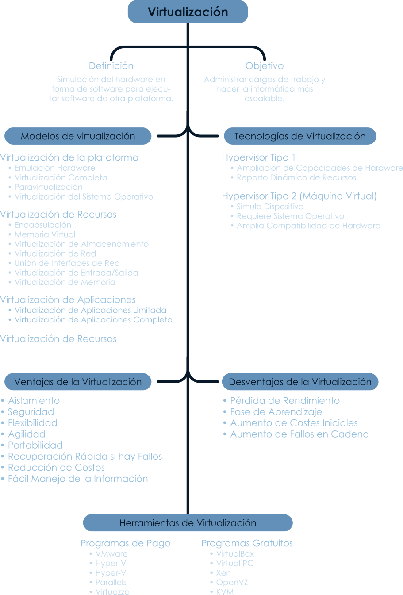
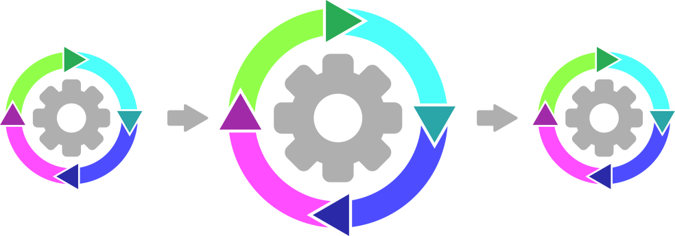
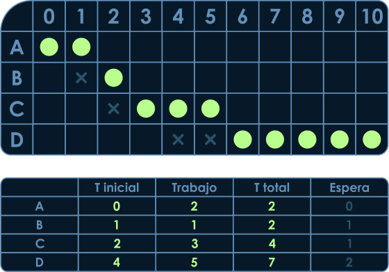
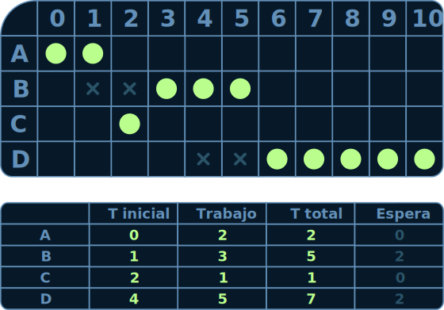
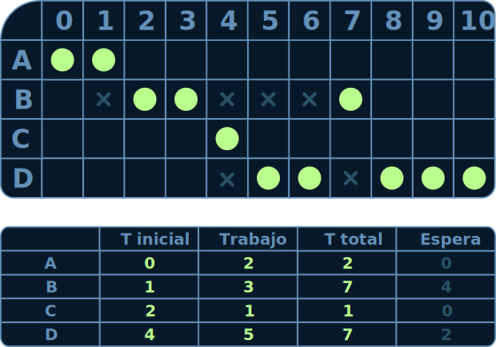

Gestión de memoria
La gestión de memoria en una computadora se trata de administrar la memoria principal. Se asigna memoria a los programas que la necesitan y se libera la memoria no utilizada para otros programas.
Hoy en día, las computadoras tienen mucha memoria, pero las aplicaciones necesitan más, lo que aumenta la demanda de memoria en dispositivos informáticos contínuamente

El administrador de memoria en el sistema operativo supervisa el uso de la memoria y asigna memoria a los procesos. El sistema de gestión de memoria organiza de manera dinámica la asignación y control de la memoria.
La memoria principal se comparte entre el sistema operativo y los procesos utilizando el concepto de multiprogramación, donde se divide en espacios para que cada proceso se ejecute de forma independiente. Se asigna un espacio fijo para el sistema operativo y el resto de la memoria se utiliza para los procesos según sea necesario.
La gestión de memoria tiene varios objetivos:
- Dar a cada proceso su propio espacio lógico para que se ejecute de manera independiente.
- Mover procesos cuando se quedan sin memoria o cuando otro proceso tiene prioridad.
- Garantizar la protección entre procesos para evitar solapamientos.
- Salvaguardar la memoria asignada al sistema operativo.
- Habilitar el intercambio de memoria entre procesos supervisado por el sistema operativo.
- Optimizar el rendimiento del sistema al evitar interferencias entre procesos.
BCP
Un proceso es un programa en acción con sus partes activas. Es una unidad que el sistema operativo administra. Mientras un programa es estático, un proceso es dinámico.
Los procesos pueden detenerse y reiniciarse rápidamente, alternando entre ellos en sistemas operativos multitarea, lo que da la sensación de que ocurren al mismo tiempo. Esto es posible en sistemas con múltiples procesadores o núcleos, creando una especie de CPU virtual para cada proceso.

Un proceso se describe por:
- Número único (ID)
- Estado actual
- Prioridad
- Instrucción en curso
- Datos y memoria asociados
- Registro de CPU
- Solicitudes de entrada/salida
- Información de auditoría para rastreo
Creación de un proceso
Los procesos se crean en sistemas operativos debido a cuatro eventos principales:
- Arranque del sistema: Al iniciar el sistema, se inician procesos en segundo plano (demonios) y procesos de primer plano para interactuar con los usuarios.
- Llamada al sistema: Un proceso puede crear nuevos procesos relacionados entre sí mediante llamadas al sistema (por ejemplo, para tareas en red).
- Petición de usuario: Los usuarios pueden iniciar procesos a través de comandos, haciendo clic en iconos o enviando documentos para imprimir en sistemas de interfaz gráfica.
- Inicio de trabajo por lotes: En máquinas empresariales, se generan rutinas de almacenamiento o auditoría de datos, y el sistema operativo crea procesos para ejecutar estos trabajos cuando los recursos están disponibles.
Terminación de un proceso
La terminación de un proceso en un sistema operativo ocurre debido a diferentes situaciones:
- Salida normal: Cuando un proceso se cierra voluntariamente, como cuando un usuario finaliza una aplicación o sesión.
- Salida por error: También es voluntaria y ocurre cuando un proceso se detiene debido a un error, como la referencia a un archivo inexistente al compilar un programa.
- Error fatal: Es una detención involuntaria causada por falta de memoria, violación de límites de memoria, errores aritméticos, fallos de E/S, instrucciones no válidas o llamadas a instrucciones privilegiadas.
- Eliminado por otro proceso: Es una terminación involuntaria que ocurre cuando otro proceso, como el proceso padre, solicita la terminación de un proceso hijo a través del Sistema Operativo.
Virtualización
La virtualización es una técnica que permite simular hardware como un programa informático para ejecutar software de una plataforma de hardware diferente. Se crea una versión virtual de recursos como servidores, sistemas operativos, almacenamiento y redes en informática.
La virtualización no solo divide máquinas en varias máquinas virtuales, sino que también combina múltiples recursos físicos en uno virtual. Por ejemplo, en la virtualización de almacenamiento, se agrupan múltiples recursos de almacenamiento en red como uno solo para una gestión más sencilla y eficiente.
El objetivo principal de la virtualización es administrar las cargas de trabajo y hacer que la informática sea más escalable. Se aplica en diversas capas, como virtualización a nivel de sistema operativo, a nivel de hardware y de servidores.

Prioridad de procesos
La prioridad en general de los sistemas operativos se refiere a cómo se gestionan y asignan los recursos del sistema a los procesos y tareas en ejecución.
Los sistemas operativos utilizan algoritmos de planificación para determinar cuál es el próximo proceso que se ejecutará y cómo se distribuirán los recursos del sistema.

En Windows, los procesos se ejecutan con diferentes prioridades para garantizar un funcionamiento suave y eficiente del sistema operativo. Estas prioridades se establecen mediante un valor llamado nivel de prioridad.
A continuación, se describen algunos conceptos clave relacionados con la prioridad en los sistemas operativos:
- Prioridad de procesos: Los sistemas operativos asignan prioridades a los procesos para determinar cuál se ejecutará a continuación. Esto se hace para garantizar una asignación justa de recursos y un rendimiento eficiente. Los procesos críticos o de alta prioridad a menudo reciben más recursos que los procesos de baja prioridad.
- Planificación de procesos: Los sistemas operativos utilizan algoritmos de planificación de procesos para decidir el orden en que se ejecutan los procesos. Estos algoritmos pueden ser de varios tipos, como planificación de tiempo compartido (round-robin), planificación por prioridad, planificación en función de colas de tareas, etc.
- Concurrencia y multiprocesamiento: Los sistemas operativos modernos administran múltiples procesos de forma simultánea en sistemas con múltiples núcleos de CPU. Esto implica asignar prioridades a los procesos y utilizar técnicas como la multitarea y la sincronización para garantizar un uso eficiente de los recursos del sistema.
- Prioridad en E/S: Además de la asignación de CPU, los sistemas operativos también gestionan la prioridad de las operaciones de entrada/salida (E/S). Esto incluye la prioridad de solicitudes de disco, solicitudes de red, etc., para garantizar un acceso equitativo y eficiente a los recursos de E/S.
- Prioridad en tiempo real: Algunos sistemas operativos, como Windows, Linux y otros, admiten procesos de tiempo real que deben completarse en plazos determinados. Estos procesos a menudo tienen la prioridad más alta y se ejecutan con tiempos de respuesta garantizados.
- Planificación de hilos: En sistemas operativos modernos, los hilos se ejecutan en el contexto de procesos y se pueden planificar de manera independiente. Los sistemas operativos asignan prioridades a los hilos dentro de un proceso para determinar cuál se ejecutará a continuación.
Ejercicios de procesos
En base a ejercicios que se han realizado en clase sobre los procesos se hicieron estos ejemplos:
FCFS First-Come, First-Served

SJF Shortest Job First

Round Robin Q=2
